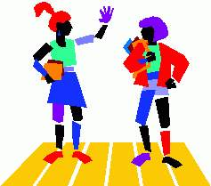

| Vi efterlyser et par unge, der sammen med styregruppen vil være med til at starte en netcafé. Jeres opgave vil være at undersøge, om der blandt unge er behov for en aften om ugen at få stillet Det digit@le værksted til rådighed. Hvordan det skal organiseres, hvilke aftener det skal være, hvilke aldersgrænser det skal sættes, hvad der skal være mulighed for at lave ? Alle disse ting vil vi gerne have jer til at tage stilling til. Altså !! Er der et par af jer, der har lyst til at være med til at planlægge dette, så kontakt et af styregruppens medlemmer. |